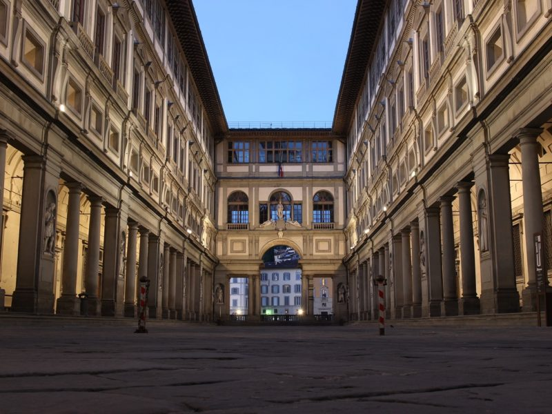
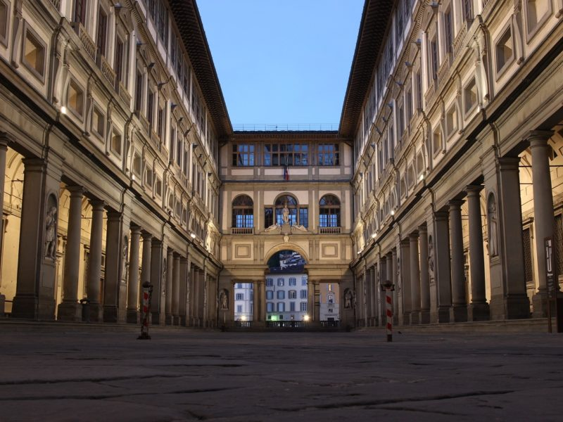

Florence
Galerie


 


Pourquoi visiter Florence ?
Nichée dans les Apennins, traversée par la rivière Arno, Florence est la capitale de la Toscane, une des plus belles régions de l’Italie, connue pour ses charmants villages et ses paysages magnifiques. Si cette région à elle seule vaut le détour, Florence reste tout de même l’attraction principale de la région. Considérée comme le berceau de la Renaissance, sa richesse culturelle et artistique est incroyable. Elle fait de Florence un des plus importants centres touristiques d’Italie, et à raison : la ville est classée au patrimoine mondial de l’Unesco et abrite quelques-uns des musées, des palais et des œuvres d’art les plus extraordinaires du monde ! Visiter Florence est un véritable voyage au cœur de la Renaissance, une période de l’histoire marquée par un art florissant. Votre séjour dans la ville des illustres Médicis représente alors une aventure culturelle à part entière qu’aucun voyageur ne souhaiterait manquer.
Les spécialités fiorentine
Les soupes : Ribollita & Pappa al pomodoro
La pappa al pomodoro est une autre soupe traditionnelle de la Toscane à laquelle on ajoute du pain rassis, cette fois à base de tomates, de basilic, d’ail et d’huile d’olive. Tout simple, mais habilement préparée à partir d’ingrédients de qualité, c’est un régal.
Lampredotto
Le lampredotto est le street food typique de Florence. Il s’agit de tripes tranchées finement, puis cuites au court-bouillon et servies telles quelles à l’assiette ou encore en sandwich. Vous avez le choix d’aromatiser le lampredotto d’une sauce rouge (piquante) ou verte (aux herbes), ou bien de le commander bagnato (le pain mouillé avec un peu de jus de cuisson).
Bistecca alla fiorentina
La pièce maîtresse de la cuisine florentine est la bistecca alla fiorentina, un steak de style « T bone », entre le filet et le faux-filet, pesant de deux à huit livres. Les carnivores seront charmés par ce bifteck épais, bien rôti à l’extérieur, mais rouge et juteux à l’intérieur. Ces biftecks, provenant généralement de bœuf de race Chianina, sont cuits à la braise et servis bien saignants avec sel, poivre, huile d’olive et quartier de citron. Le plat est généralement pour deux personnes.
Pappardelle sulla lepre
Puisque la viande est abondante dans la cuisine florentine, on la retrouve aussi dans les plats de pâtes, comme dans les traditionnels pappardelle sulla lepre. Cette recette typique de pappardelle (longues pâtes plates et larges) se prépare avec une sauce au lièvre qui peut également être cuisinée avec d’autres viandes comme l’oie ou le lapin. Encore une fois : simple, rustique, riche en saveurs.
Chianti
Le Chianti est un vin rouge italien bien connu qui détient une Dénomination d’origine contrôlée. Sa zone de production est située en Toscane, allant du sud de Florence jusqu’aux alentours de Sienne (au sud), d’Arezzo (à l’est) et de Pise (à l’ouest). Tous les vignerons de la zone d’appellation Chianti ne produisent pas du Chianti Classico. Pour ce faire, le vin doit avoir au moins 80% de cépage sangiovese et répondre à un cahier de charges précis. De façon générale, les Chianti classico sont des vins aromatiques (de souple à charnu) ayant souvent un parfum de violette. Il n’en demeure pas moins que les différents Chianti classico ont des personnalités bien à eux, selon le terroir, les cépages qui complémentent le sangiovese s’il y a lieu, la vinification, etc.
Préparer son voyage
Ibi victu recreati et quiete, postquam abierat timor, vicos opulentos adorti equestrium adventu cohortium, quae casu propinquabant, nec resistere planitie porrecta conati digressi sunt retroque concedentes omne iuventutis robur relictum in sedibus acciverunt.
Tips
- Nemo quaeso miretur, si post exsudatos labores
- Post quorum necem nihilo lenius ferociens Gallus
- Intellectum est enim mihi quidem in multis, et
- Rogatus ad ultimum admissusque in consistorium
- Quam ob rem vita quidem talis fuit vel fortuna vel
- Erat autem diritatis eius hoc quoque indicium nec
- Hinc ille commotus ut iniusta perferens et indigna
- Quam ob rem cave Catoni anteponas ne istum quidem
- Inter quos Paulus eminebat notarius ortus in
- Hanc regionem praestitutis celebritati diebus
Climat annuel à Florence
| Saisons | Climat Florence |
| Hiver | De décembre à février, est assez doux : la température moyenne de janvier est d'environ 6,5 °C. Cependant, il peut faire plus ou moins froid, en fonction de la situation : quand la météo est bonne, la nuit la température se rapproche souvent de zéro, et il peut y avoir un peu de brouillard au matin, alors que dans d'autres situations le vent froid du nord, appelé « tramontana », peut apporter quelques jours froids et venteux, et quelques gelées la nuit. Chaque maintenant et puis, il peut même neiger. Pendant les périodes de froid intense, la température minimale peut tomber jusqu'à -5/-10 °C Lorsque les courants soufflent du sud, il fait plus doux, mais aussi nuageux et souvent pluvieux : dans ces cas, la température peut atteindre ou dépasser les 15 °C même en hiver. |
| Printemps | De mars à mai, est doux et progressivement plus ensoleillé, mais il est également assez pluvieux. Le mois de mars et la première quinzaine d'avril sont des périodes instables, dans lesquelles les premiers jours doux et ensoleillés alternent avec des journées pluvieuses et froides, encore assez hivernales. À partir de la deuxième moitié d'avril, et surtout à partir de mai, la température devient agréable d'une manière plus constante, mais certaines périodes de pluie sont encore possibles. |
| Eté | De juin à août, est chaud et ensoleillé. Chaque maintenant et puis, quelques orages peuvent se produire dans l'après-midi, et plus rarement aussi quelques jours frais et pluvieux, surtout en juin et dans la seconde moitié d'août. Les températures diurnes, quand le temps est agréable (et cela arrive très souvent), sont élevées, compte tenu de la distance de la mer et de la position dans une vallée : en fait, Florence est souvent l'une des villes les plus chaudes de l'Italie. Chaque année, il peut y avoir des jours avec des températures maximales autour de 36/38 °C, mais parfois la température peut atteindre jusqu'à 40 °C. Heureusement, l'humidité n'est pas très élevée, et la nuit, la température devient presque toujours acceptable. |
| Automne | De septembre à novembre, est initialement chaud et agréable, sec et lumineux, mais il devient vite assez pluvieux, et en fait c'est la saison la plus pluvieuse, surtout en octobre et en novembre. Parfois, les pluies peuvent être abondantes. |
Choses à faire, à visiter
| Lieux | Description |
| Le Dôme de Florence (Duomo – Cathédrale Santa Maria del Fiore) | Le site le plus populaire à visiter à Florence est certainement son Duomo (cathédrale), la Cattedrale de Santa Maria del Fiore. La construction de l’immense cathédrale gothique a débuté en 1296, a été consacrée en 1436, et peut aujourd’hui accueillir jusqu’à 20 000 personnes.2* |
| Palazzo Vecchio | C’est autour de la plus célèbre place de Florence que débutent vos premières découvertes. Cœur du centre historique, véritable scène artistique et centre politique de la ville depuis le Moyen-Âge, la Piazza della Signoria héberge quelques pépites incontournables à votre voyage comme diverses sculptures (notamment une copie du David de Michel-Ange). Si la Loggia della Signoria et sa galerie à voûtes en arcades est à voir, l’hôtel de ville de Florence lui, s’impose à vos déambulations. |
| Le Campanile de Giotto | La tour Campanile de Giotto (clocher) se trouve sur la Piazza del Duomo. Le premier étage a été conçu par Giotto, d’où son oeuvre éponyme. Au début, Giotto projetait d’élever la tour à 110-115 mètres, mais il meurt en 1337 laissant le chantier inachevé… |
| La Galleria degli Uffizi (Galerie des Offices) | La Galleria degli Uffizi possède la plus importante collection au monde d’art de la Renaissance, mais c’est également le musée le plus fréquenté d’Italie. |
| Galleria (Galerie de l’Académie) | La Galleria dell’ Accademia (Galerie de l’Académie) possède d’importantes peintures et sculptures des 13ème et 16ème siècles. Le David de Michel-Ange, probablement la sculpture la plus célèbre au monde, y a élu domicile au même titre que d’autres sculptures de l’artiste. Parmi les chefs-d’oeuvre de Michel-Ange, vous découvrirez également « Saint Matthieu » et « Les Prisonniers ». |
| Santa Maria Novella | A quelques pas de là se trouve le quartier Santa Maria Novella. Réputé pour son église éponyme qui trône là, gigantesque, le quartier appelle avant tout à la déambulation et aux pauses cappuccino en terrasse dans les divers cafés qu’il héberge. |
| Musée di San Marco | Installé Piazza San Marco (non loin du Duomo), le Musée di San Marco était à l’époque un couvent dominicain. Aujourd’hui ouvert au public, il héberge la plus grande collection de peintures de Fra Angelico du monde, peintre et moine de renom. Tout autour et à l’étage supérieur du cloître Saint-Antoine, la salle de l’hospice, le grand réfectoire et même les cellules des dortoirs vous accueillent pour découvrir des fresques religieuses aujourd’hui considérées comme de véritables œuvres d’art. |
| Palais Pitti | Depuis le Duomo ou au gré de votre balade dans le centre historique de Florence, prenez un temps pour visiter le Palais Pitti – Palazzo Pitti. Ancienne résidence des Médicis, le Palais est aujourd’hui un témoin du patrimoine local. Hébergeant 6 musées et 3 jardins, il s’impose comme l’un des plus grands musées de la ville. |
| Jardin de Boboli | Situé juste derrière le Palais Pitti, le Jardin de Boboli intègre indéniablement les merveilles de Florence. Souvent comparé à ceux de Versailles, le Jardin de Boboli offre une parenthèse luxuriante et luxueuse digne des plus grands contes de fée. Musée de la Porcelaine, Galerie des Costumes, Grande Grotte, Kaffeehaus, Il Viottolone mais aussi fontaines et parterres de roses et de dahlias dressent le portrait d’un lieu hors du temps, sublimé par de précieux héritages. |
| Ponte Vecchio | Édifié en 1345, le Ponte Vecchio (vieux pont) fut le premier pont de Florence enjambant l’Arno. C’est aussi le seul à avoir survécu à l’époque médiévale de Florence (d’autres ponts ont été détruits lors de la Seconde Guerre mondiale). Aussi célèbre que les monuments qui font de Florence une ville à la beauté si particulière, le Ponte Vecchio se traverse en empruntant le Corridor de Vasari, un passage secret construit par Vasari pour le duc Cosme Ier de Toscane en 1565 reliant le Palazzo Vecchio au Palais Pitti. Depuis le pont, profitez également d’une vue magnifique sur le fleuve Arno et les paysages environnants : l’arrêt mérite quelques beaux clichés. |
| La Basilique Santa Croce | Santa Croce, située sur la Piazza Santa Croce, est la plus grande église franciscaine d’Italie. Sacrée donc, elle abrite les tombeaux de plusieurs Florentins importants dont Michel-Ange et Dante Alighieri, mais aussi ceux de Nicolas Machiavel et Galilée. Le vaste intérieur est habillé de vitraux et de fresques exceptionnelles. Une des œuvres les plus importantes de Brunelleschi, « la Cappella dei Pazzi » , vient également sublimer la beauté des lieux. |
| Baptistère Saint-Jean | Surnommée « Portes du Paradis », la baptistère Saint-Jean-Baptiste est l’un des bâtiments les plus anciens de Florence. Érigée au 11ème siècle sur la Piazza del Duomo, elle attise la curiosité avec son extérieur fait de marbre vert et blanc. Ses trois ensembles de portes en bronze étonnantes (ce sont en fait des reproductions, les originaux sont au musée du Duomo) appellent elles aussi à la découverte. Un costume aussi élégant qu’étonnant qui en font le monument le plus visité de la Piazza del Duomo, c’est le monument le plus visité (après le Dôme bien-sûr). |